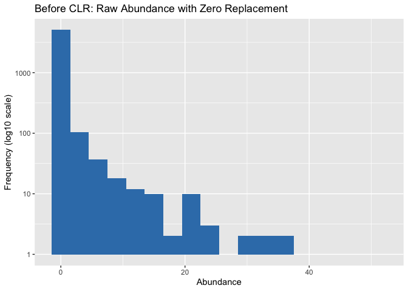
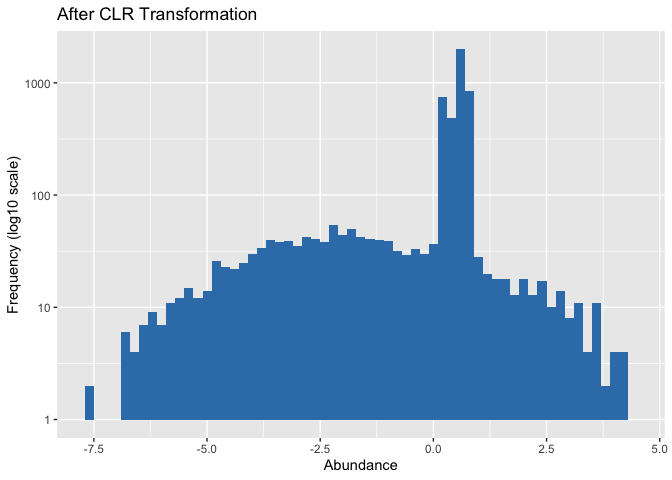
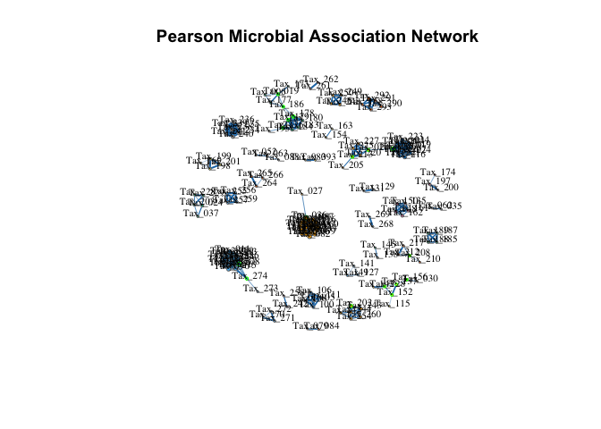

Organisation: Data Science Platform
Responsibles: Albert Pallejà Caro (apca@dtu.dk)
Alexander Zubov
(alzub@dtu.dk)
Edir Sebastian Vidal Casto
(s243564@student.dtu.dk)
Juliana Assis (jasge@dtu.dk)
Microbial association networks tutorial#
This markdown is to create microbial association networks (MANs) based on the abundance data using pearson correlation as association measure.
Work environment setup#
Import R Packages
library(compositions)
library(igraph)
library(ggplot2)
library(tidyr)
library(dplyr)
Load data#
# Abundance table
abundance <- readRDS(file = "../data/MetaphlanAbundance_Species.rds")
rownames(abundance) <- gsub("_SRR_db1.metaphlan", "", rownames(abundance))
dim(abundance)
## [1] 18 293
# Taxonomical annotation
annotation <- readRDS(file = "../data/MetaphlanAnnotations_Species.rds")
dim(annotation)
## [1] 293 7
# Metadata
metadata <- read.table(file = "../data/metadata.tsv",
header = TRUE, sep = "\t",
quote = "",
row.names = NULL)
rownames(metadata) <- metadata$Sample
dim(metadata)
## [1] 18 21
# Take only samples with sequencing and metadata information
abundance <- abundance[rownames(abundance) %in% rownames(metadata),]
dim(abundance)
## [1] 18 293
Create a directory to store the results#
results_dir <- "../results/report/05_Microbial-association-networks"
dir.create(results_dir, recursive = TRUE, showWarnings = FALSE)
Data prepation#
Zero treatment
In metagenomics data, it is common to have zero values in the
abundance table, which affect the estimation of associations between
species. So, zero values need to be treated before calculating the
associations. For simplicity, we use the pseudo zero treatment
method, which adds a pseudo count of 1 to all zero values in the
abundance table. There are better methods for imputing zeros in
compositional data, such as the non-parametric
multiplicative simple replacement
and
bayesian multiplicative replacement,
available in the
zCompositions
package.
# Count zeros before replacement
num_zeros_before <- sum(abundance == 0)
cat("Number of zero entries BEFORE replacement:", num_zeros_before, "\n")
## Number of zero entries BEFORE replacement: 3936
# Replace only zeros with a pseudocount
abund_pseudo <- abundance
abund_pseudo[abund_pseudo == 0] <- 1
# Count zeros after replacement (should be 0)
num_zeros_after <- sum(abund_pseudo == 0)
cat("Number of zero entries AFTER replacement:", num_zeros_after, "\n")
## Number of zero entries AFTER replacement: 0
Now, we can visualize the abundance distribution after the zero treatment using a histogram.
# Convert abundance to data frame for easier manipulation
pseudo_long <- as.data.frame(abund_pseudo) %>%
mutate(Sample = rownames(.)) %>%
pivot_longer(-Sample, names_to = "Taxon", values_to = "Count")
# Histogram with log-scaled x-axis and adjusted bins
p_hist <- ggplot(pseudo_long, aes(x = Count)) +
geom_histogram(binwidth = 3, fill = "#377eb8") +
scale_y_log10(labels = function(x) format(x, scientific = FALSE)) +
ggtitle("Before CLR: Raw Abundance with Zero Replacement") +
xlab("Abundance") +
ylab("Frequency (log10 scale)") +
theme_gray()
# Show plot in output
p_hist

# Save to results_dir
ggsave(
filename = file.path(results_dir, "1_histogram_after_zero_treatment.png"),
plot = p_hist,
width = 6, height = 4, dpi = 300
)
Normalization#
Since Pearson correlations may lead to compositional effects in
metagenomics data, we apply the
centered-log-ratio (clr)
transformation as normalization method. The clr method maps
compositions in a p-dimensional simplex to a Euclidean space, which
allows for the application of standard statistical methods, such as
Pearson correlation.
# CLR transformation
abund_clr <- clr(acomp(abund_pseudo))
Now, we can visualize the abundance distribution after the CLR transformation using a histogram.
# Convert abundance to data frame for easier manipulation
clr_long <- as.data.frame(abund_clr) %>%
mutate(Sample = rownames(.)) %>%
pivot_longer(-Sample, names_to = "Taxon", values_to = "Count")
# Histogram with log-scaled x-axis and adjusted bins
p_hist <- ggplot(clr_long, aes(x = Count)) +
geom_histogram(binwidth = 0.20, fill = "#377eb8") +
scale_y_log10(labels = function(x) format(x, scientific = FALSE)) +
ggtitle("After CLR Transformation") +
xlab("Abundance") +
ylab("Frequency (log10 scale)") +
theme_gray()
# Show plot in output
p_hist

# Save to results_dir
ggsave(
filename = file.path(results_dir, "2_histogram_after_clr_transformation.png"),
plot = p_hist,
width = 6, height = 4, dpi = 300
)
Network construction#
Here, we create a Microbial association network (MAN) based on Pearson correlations between species abundances.
Create association table using Pearson correlation#
# Compute Pearson correlation between species after CLR
cor_matrix <- cor(abund_clr, method = "pearson")
Sparsification by thresholding#
Creating a MAN direclty from the association table would lead to a dense
network where all species are connected, making it difficult to
interpret. Hence, the asscoiation table is usually sparsified to select
only the strongest associations. Here, we use thresholding as
sparsification method, which filters out weak associations based on a
association threshold. We apply an threshold of 0.9, keeping only
those with a correlation greater than or equal to this value. Other
sparsification methods are based on statistical tests such as Student’s
t-test, permutation test, StARS stability
selection, and others.
# Define correlation threshold
threshold <- 0.9
# Apply thresholding to the association table
adjacency_matrix <- ifelse(abs(cor_matrix) >= threshold, cor_matrix, 0)
diag(adjacency_matrix) <- 0
Create edge list#
Here, we use the absolute values of the sparsified associations as the edge weights. In this way, the sign of the association is not considered, and correlations of high magnitude (both positive and negative) will have a high edge weight in the network. If asigning low edge weights to negative associations is desired, the association table can be transformed into a similarity matrix. More information on this can be found in this tutorial.
# Assign absolute values to edge weights
edge_weight_matrix <- abs(adjacency_matrix)
# Create igraph object
graph <- graph_from_adjacency_matrix(edge_weight_matrix, mode = "undirected", weighted = TRUE, diag = FALSE)
# Remove singletons - unconnected nodes
graph <- delete_vertices(graph, degree(graph) == 0)
# Print summary of the graph
summary(graph)
## IGRAPH 7f639dc UNW- 163 557 --
## + attr: name (v/c), weight (e/n)
# Convert to dataframe
edge_df <- igraph::as_data_frame(graph)
# Rename column names
names(edge_df)[1:2] <- c("source", "target")
# Save edge list
write.table(edge_df,
file = file.path(results_dir, "3_pearson_network_edgelist.csv"),
sep = ",", quote = FALSE, row.names = FALSE)
Network analysis#
We calculate different centrality measures, which indicate the importance of each node following various criteria. Here we calculate the degree and betweenness centrality. Hubs are defined as nodes with a degree above the 90% quantile of the empirical degree distribution.
Clusters are identified using the greedy modularity optimization
algorithm
(cluster_fast_greedy).
This algorithm optimize the modularity of networks by iteratively
grouping nodes into communities, aiming to maximize the density of
intra-community edges compared to inter-community edges
# Calculate centralities
deg <- degree(graph)
betw <- betweenness(graph, weights = E(graph)$weight)
# Community detection
clusters <- cluster_fast_greedy(graph, weights = E(graph)$weight)
clusters_vec <- membership(clusters)
# Hubs: top 10% by eigenvector centrality
betw_threshold <- quantile(betw, 0.9)
is_hub <- betw >= betw_threshold
# Create node table
node_table <- data.frame(
taxa = V(graph)$name,
degree = deg,
betweenness = betw,
cluster = clusters_vec,
is_hub = is_hub
)
write.table(node_table,
file = file.path(results_dir, "4_pearson_network_node_table.csv"),
sep = ",", quote = FALSE, row.names = FALSE)
Network visualization#
Finally, we visualize the network using the igraph package. The nodes
are colored by their cluster membership, and the size of the nodes is
proportional to their degree. The width of the edges is proportional to
the absolute value of the association.
# Function to rescale values to a target range
rescale_base <- function(values, target_range = c(0, 1)) {
min_val <- min(values, na.rm = TRUE)
max_val <- max(values, na.rm = TRUE)
range_val <- max_val - min_val
# Handle the case where all values are the same (avoid divide by 0)
if (range_val == 0) {
return(rep(mean(target_range), length(values)))
}
# Min-max normalization formula:
scaled <- (values - min_val) / range_val
# Stretch to desired output range
scaled * (target_range[2] - target_range[1]) + target_range[1]
}
# Create vector size evctor based on degree
vertex_size <- rescale_base(log1p(deg), target_range = c(1.5, 3.5))
# Edge width using absolute correlation
edge_weights <- abs(E(graph)$weight)
edge_width <- rescale_base(edge_weights, target_range = c(0.3, 2))
# Plot the network
net_viz <- plot(
graph,
vertex.size = vertex_size,
vertex.color = clusters_vec,
vertex.frame.color = ifelse(is_hub, "green", "grey50"),
vertex.label.cex = 0.7, # Size of labels
vertex.label.dist = 0.5, # Distance of labels from nodes
vertex.label.color = "black", # Color of labels
edge.width = edge_width,
edge.color = "#1f78b4",
main = "Pearson Microbial Association Network"
)

# Open and close PNG device
png(file.path(results_dir, "5_pearson_network_igraph_plot.png"),
width = 2500, height = 2300, res = 150)
dev.off()
## quartz_off_screen
## 2
Further information#
The Network learning & analysis chapter from the Orchestrating Microbiome Analysis Book provides more details about all the steps and consideration to take when creating and analyzing microbial association networks (MANs).
Also, the netcomi package provides a comprehensive set of tools for MAN creation, analysis, and visualization. We crated an addtional R markdown file to demonstrate how to use this package using the same dataset from this course.